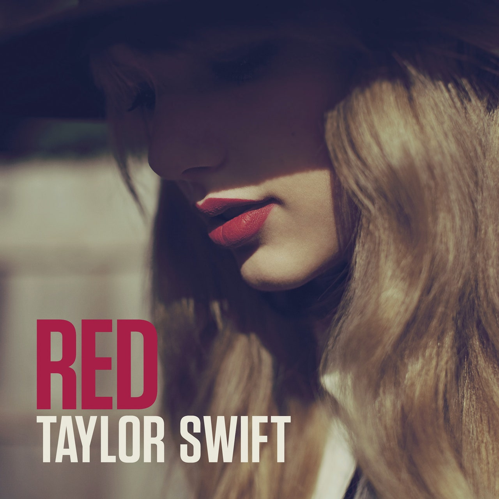
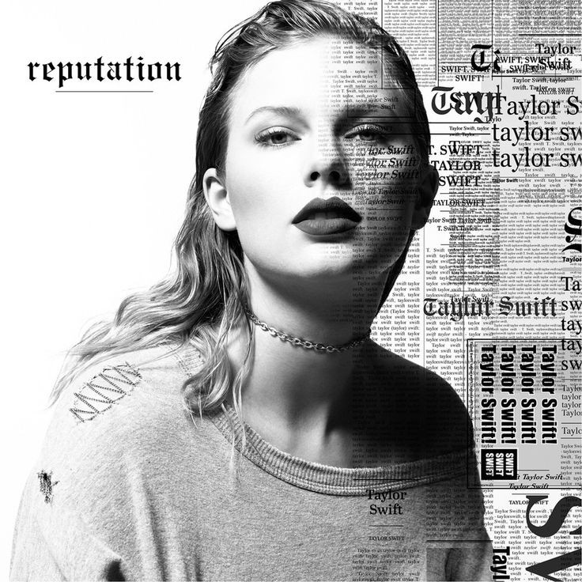
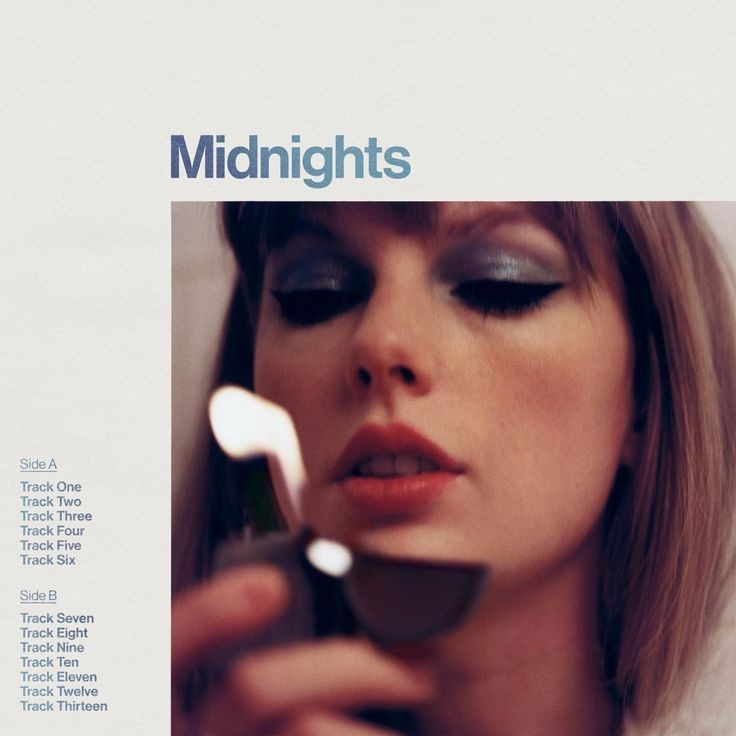
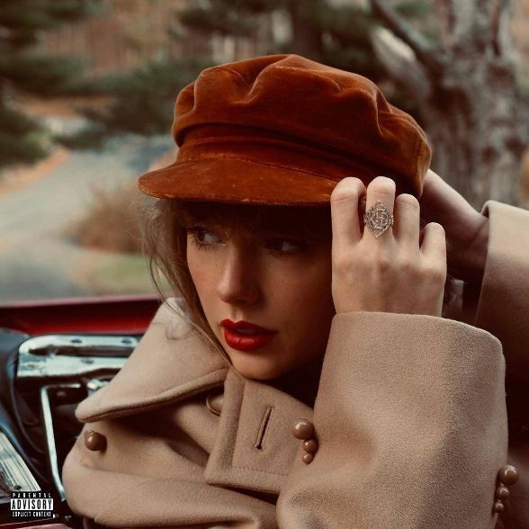

Taylor Swift é o primeiro álbum de estúdio de Taylor, lançado pela Big Machine Records em 24 de outubro de 2006. Ela tinha 16 anos na época e escreveu suas canções principalmente durante seu primeiro ano do ensino médio.O álbum foi produzido por Nathan Chapman, que já havia trabalhado com Taylor em suas gravações demo. Musicalmente, o álbum tem estilo country, enquanto suas letras falam de relacionamentos e amizades adolescentes. Como Taylor costumava se sentir rejeitada quando era mais jovem, as músicas também abordam suas lutas pessoais na escola.Taylor Swift passou a se tornar o álbum mais antigo da década de 2000 e fez de Taylor a primeira artista country feminina solo a escrever ou co-escrever todas as músicas de um álbum de estreia Platinum (sete vezes). O apelo cruzado do álbum moldou o estilo country pop do início da carreira de Taylor, e suas narrativas autobiográficas sobre amor e desgosto inspiraram uma geração subsequente de cantores e compositores.
01.Tim Mcgraw/02.PictureTo Burn/03.Teardrops On My Guitar/04.A Place In This World/05.Cold As You /06.The Outside /07.Tied Together With A Smile /08.Stay Beautiful /09.Should've Said No /10.Mary's Song (oh My My My) /11.Our Song
Fearless é o segundo álbum de estúdio de Taylor. Foi lançado em 11 de novembro de 2008, pela Big Machine Records . Inspirado pelos sentimentos de Taylor quando adolescente, as letras exploram temas de romance, mágoa e contos de fadas. O título do álbum refere-se ao tema abrangente de todas as suas canções, já que todas retratam a coragem de Taylor em abraçar os desafios da vida e do amor. Fearless é considerado seu álbum inovador e é o álbum country mais premiado da história da música.Taylor estreou com um excelente álbum autointitulado dois anos antes, mas foi com o lançamento de Fearless que ela cristalizou a persona Country Princess que a levaria ao estrelato conquistador do mundo durante a primeira fase de sua carreira. Como um todo, este álbum também representou um grande avanço em sua confiança e perspicácia como compositora, e demonstrou total fé em seu estilo vocal coloquial. Um que a posicionou como a celebridade adolescente com quem as outras garotas mais gostariam de sair e a que a maioria dos garotos gostaria de convidar para o baile de formatura.

01.Fearless/02.Fifteen/03.Love StoryHey Stephen/05.White Horse/06.You Belong With Me/07.Breathe (ft. Colbie Caillat)/08.Tell Me Why/09.You're Not Sorry/10.The Way I Loved You/11.Forever & Always/12.The Best Day/13.Change
Speak Now é o terceiro álbum de estúdio de Taylor. Lançado em 25 de outubro de 2010, foi escrito inteiramente por Taylor como a continuação de seu blockbuster Fearless (2008). Ela o desenvolveu como um álbum de conceito vago sobre as confissões que queria fazer para as pessoas que conheceu, mas nunca teve a chance. É o álbum solo escrito mais vendido na história da música. Speak Now foi uma reação. Depois de dois álbuns enormes, enquanto sua estrela subia a novos patamares, Taylor estava cansada de ouvir que ela não escrevia suas próprias canções. Então, para seu terceiro álbum de estúdio, ela decidiu não escrever com mais ninguém - deixe os créditos mostrarem que ela poderia fazer uma música country brilhante cativante o suficiente para passar para a rádio pop sozinha. E assim ela fez. Isso não acabaria com as dúvidas sobre sua autenticidade, mas para qualquer um disposto a aceitar Taylor pelo valor de face, Speak Now foi a prova de que ela é um talento formidável.
01.Mine/02.Sparks Fly/03.Back To December/04.Speak Now/05.Dear John/06.Mean/07.The Story Of Us/08.Never Grow Up/09.Enchanted/10.Better Than Revenge/11.Innocent/12.Haunted/13.Last Kiss/14.Long Live/15.Ours International (Deluxe edition bonus track)/16.If This Was a Movie (International Deluxe edition bonus)/17.Superman (International Deluxe edition bonus)/18.Back to December (acoustic) (Deluxe Bonus)/19.Haunted(acoustic) (Deluxe Bonus)/20.Mine (US version) (Deluxe Bonus)/21.Back to December (US version)(Deluxe Bonus)/22.The Story of Us (US version) (Deluxe Bonus)
RED é o quarto álbum de estúdio de Taylor. Foi lançado em 22 de outubro de 2012 e é o álbum onde ela se reinventou pela primeira vez. Até então ela era conhecida como uma artista country, mas a RED a viu ramificando-se no pop e experimentando novos sons. Era um risco, mas valia a pena correr. Hoje, RED ocupa o 99º lugar na lista da Rolling Stone dos “500 melhores álbuns de todos os tempos”. O álbum solidificou o domínio pop star de Taylor, ao mesmo tempo em que a marcou como uma das melhores compositoras de sua geração.RED tem um papel tremendamente importante na discografia de Taylor porque marca sua transição de estrela country adolescente para cantora e compositora de pleno direito. Isso a trouxe para fora da familiaridade de Nashville e direto para o centro da arena pop global. É o disco onde Taylor mostra que cresceu e pode tudo .
01.State Of Grace/02.Red/03.Treacherous/04.I Knew You Were Trouble/05.All Too Well/06.22/07.I Almost Do/08.We Are Never Ever Getting Back Together/09.Stay Stay Stay/10.The Last Time (Feat. Gary Lightbody)/11.Holy Ground/12.Sad Beautiful Tragic/13.The Lucky One/14.Everything Has Changed (feat. Ed Sheeran)/15.Starlight/16Begin Again/17.The Moment I Knew/18.Come Back... Be Here/19.Girl At Home/20.Treacherous(Original Demo Recording)/21.Red (Original Demo Recording)/22.State of Grace (Acoustic Version)
1989 é o quinto álbum de estúdio de Taylor. Foi lançado em 27 de outubro de 2014 como seu primeiro álbum pop oficial. Ela deu ao disco o nome de seu ano de nascimento como um renascimento simbólico de sua arte. 1989 apareceu em várias listas de publicações dos melhores álbuns da década de 2010 e foi destaque na revisão de 2020 da Rolling Stone de seus “500 melhores álbuns de todos os tempos”. Além disso, é o álbum pop mais premiado da história da música.Taylor explicou que, em termos de letras, ela foi inspirada pelo processo de autodescoberta. As canções de 1989 ainda se preocupam principalmente com amor e relacionamentos, mas enfatizam as complexidades de ambos. É uma fantasia totalmente realizada de autossuficiência, confiança e prazer resultante, onde Taylor deixa de dramatizar relacionamentos fracassados e, em vez disso, decide celebrar o momento.
01.Welcome To New York/02.Blank Space/03.Style/04.Out Of The Woods/05.All You Had To do Was Stay/06.Shake It Off/07.I Wish You Would/08.Bad Blood/09.Wildest Dreams/10.How You Get The Girl/11.This Love/12.I Know Places/13.Clean/14.Wonderland(Deluxe Bonus)/15.You Are In Love (Deluxe Bonus)/16.New Romantics (Deluxe Bonus)/17.I Know Places (Voice Memo) (Deluxe Bonus)/18.I Wish You Would (Voice Memo) (Deluxe Bonus)/19.Blank Space (Voice Memo) (Deluxe Bonus)
Reputation (estilizado em letras minúsculas) é o sexto álbum de estúdio de Taylor. Lançado em 10 de novembro de 2017 após um período de disputas altamente divulgadas e imenso escrutínio da mídia e da internet, Reputation é considerado o álbum de retorno de Taylor por críticos e fãs, vendo-a "reivindicar sua narrativa". Ele estreou em primeiro lugar na parada de álbuns da Billboard 200 , tendo vendido 1,28 milhão de cópias naquela semana, mais do que os outros 199 álbuns listados juntos.Com Reputation , Taylor finalmente reagiu. Como ela orgulhosamente declara no single principal do álbum “ Look What You Made Me Do ”: “Desculpe, o velho Taylor não pode atender o telefone. Por que? Porque ela está morta! Alguém começou a se perguntar se o Taylor de antigamente realmente se foi. Com Reputation,ela criou uma caricatura maior do que a vida da cobra mesquinha e vingativa que ela parecia ser. No final do álbum, porém, ela avalia seu império em ruínas e Reputation esfarrapada, descobrindo a redenção no amor. Porque, no final das contas, a Reputation não é tanto um renascimento, mas sim um retiro para dentro.
01....Ready For It?/02.End Game (Feat. Ed Sheeran and Future)/03.I Did Something Bad/04.Don't Blame Me/05.Delicate/06.Look What You Made Me Do/07.So It Goes.../08.Gorgeous/09.Getaway Car/10.King of My Heart/11.Dancing with Our Hands Tied/12.Dress/13.This Is Why We Can't Have Nice Things/14.Call It What You Want/15.New Year's Day
Lover é o sétimo álbum de estúdio de Taylor. Foi lançado em 23 de agosto de 2019, pela Republic Records. É seu primeiro álbum a ser lançado pela gravadora desde sua saída amplamente divulgada da Big Machine Records em novembro de 2018. Consequentemente, Lover é o primeiro projeto de Taylor para o qual ela possui as gravações principais. Lover representa uma Taylor mais “positiva” após a reputação carregada e fascinante (2017), inspirada na série de catástrofes pessoais e profissionais que se acumularam após o enorme sucesso de 1989 de 2014 . Em entrevistas promovendo Lover , Taylor habilmente instruiu jornalistas e críticos a verem o álbum dessa forma, falando francamente sobre a fragilidade de sua saúde mental em 2016, quando ela estava sob o cerco da mídia por tudo, desde sua rixa reacendida com Kanye West até sua suposta culpabilidade na eleição de Donald Trump. O álbum certamente parece mais brilhante - a estética gótica da Reputation capa do álbum foi substituída pelo algodão-doce rosa e azul, imagens de céu pastel de Lover .
01.I Forgot That You Existed/02.Cruel Summer/03.Lover/05.The Archer/06.I Think He Knows/07.Miss Americana & The Heartbreak Prince/08.Paper Rings/09.Cornelia Street/10.Death By A Thousand Cuts/11.London Boy/12.Soon You'll Get Better/13.False God/14.You Need To Calm Down/15.Afterglow/16.Me! (feat. Brendon Urie of Panic! at the Disco)/17.It's Nice To Have A Friend/18.Daylight
Folklore é o oitavo álbum de estúdio de Taylor. Um disco surpresa, foi lançado em 24 de julho de 2020, pela Republic Records , apenas um dia após seu anúncio. folklore foi escrito e gravado durante o isolamento durante a pandemia de Covid-19 e retrata o que Taylor chamou de “uma coleção de canções e histórias que fluíam como um fluxo de consciência” surgindo de sua imaginação. O álbum manifesta uma narrativa vívida de narrativas em terceira pessoa que detalham o desgosto e a retrospecção. Ganhou o cobiçado prêmio de “Álbum do ano” no Grammy de 2021, tornando Taylor a primeira mulher a ganhar o prêmio três vezes.Categorizado como um disco de folk indie, rock alternativo, electro-folk e pop de câmara, o folklore marcou um afastamento musical do som pop animado dos álbuns de estúdio anteriores de Taylor. É uma coleção de canções simplificadas conduzidas por piano e guitarra, com produção de Aaron Dessner, Jack Antonoff e da própria Taylor.
01.the 1/02.cardigan/03.the last great american dynasty/04.exile (Feat. Bon Iver)/05.my tears ricochet/06.mirrorball/07.seven/08.august/09.this is me trying/10.illicit affairs/11.invisible string/12.mad woman/13.epiphany/14.betty/15.peace/16.hoax/17.the lakes (deluxe edition bonus)
Evermore é o nono álbum de estúdio de Taylor. Foi lançado em 11 de dezembro de 2020, apenas cinco meses após seu oitavo álbum, folklore . Com cada vez mais , Taylor expandiu tudo o que ela experimentou no antecessor do álbum. Ao fazer isso, evermore atua como um álbum complementar ao folclore e apresenta temas de conexão. As letras geralmente giram em torno de amor, casamento, infidelidade e noir, detalhadas na forma de narrativa impressionista e narrativas entrelaçadas. O que torna cada vez mais uma adição essencial ao catálogo de Taylor é sua vontade de contar as histórias dos outros com a mesma percepção e compaixão com que ela sempre contou a sua. E neste álbum, em particular, as histórias que ela conta são sobre como as escolhas de seus narradores impactam outras pessoas, geralmente de maneiras que causam danos irreparáveis. Ela se sentiu aliviada por poder contar histórias de outras pessoas para variar.
01.willow/02.champagne problems/03.gold rush/04.'tis the damn season/05.tolerate it/06.no body, no crime (feat. HAIM)/07.happiness/08.dorothea/09.coney island (feat.The National)/10.ivy/11.cowboy like me/12.long story short/13./14.closure/15.evermore (feat. Bon Iver)/16.Right Where You Left Me/17.It's Time to Go
Midnights é o décimo álbum de estúdio de Taylor, lançado em 21 de outubro de 2022, pela Republic Records . Um álbum conceitual sobre ruminações noturnas, foi escrito e produzido por Taylor com o colaborador de longa data Jack Antonoff. Ela descreveu o álbum como uma coleção de canções que encapsulam "uma jornada através de terrores e bons sonhos". Sete faixas bônus foram lançadas surpresa para plataformas de streaming no mesmo dia, como parte do Midnights (3am Edition). Com Midnights , Taylor elaborou um álbum conceitual em torno da pergunta: "O que te mantém acordado à noite?" Nas 13 faixas, ela explora aquelas horas sem dormir e os pensamentos intrusivos que a perturbam e – por conexão – a nós. Como uma mente inquieta, o álbum salta do arrependimento para o brilho da paixão, para a auto-aversão, para a auto-afirmação e para a ruminação sobre decisões passadas. Parte do poder do álbum é como ele representa como nossos eus adultos são inextricavelmente marcados e entrelaçados, mas nunca completamente definidos por nossa infância e adolescência.
01.Lavender Haze/02.Maroon/03.Anti-Hero/04.Snow On The Beach (Feat. Lana Del Rey)/05.You're On Your Own, Kid/06.Midnight Rain/07.Question...?/08.Vigilante Shit/09.Bejeweled/10.Labyrinth/11.Karma/12.Sweet Nothing/13.Mastermind/14.The Great War/15.Bigger Than The Whole Sky/16.Paris/17.High Infidelity/18.Glitch/19.Would've, Could've, Should've/20.Dear Reader
Fearless (Taylor's Version) é a reedição do segundo álbum de Taylor, Fearless (2008). Foi lançado em 9 de abril de 2021 e apresenta todas as faixas de Fearless regravadas com novos vocais de Taylor, incluindo seis faixas bônus que foram descartadas da versão de 2008.Realmente não havia precedente para o que Taylor estava fazendo. Nenhum artista em seu auge, muito menos uma das cantoras mais vendidas do século - recém-saído de seus dois álbuns mais aclamados pela crítica até agora no folclore de 2020 e sempre - havia feito a regravação completa de meia dúzia de LPs de enorme sucesso. por uma questão de possuir sua música completamente. No entanto, nenhuma estrela mainstream foi mais aberta sobre os direitos dos artistas do que Taylor. Então ela partiu para um período paradoxal e desconhecido de sua carreira, onde lançaria simultaneamente novas canções, canções antigas tornadas novas novamente e faixas de “From The Vault” que eram tão antigas e obscuras que pareciam completamente novas para a maioria dos ouvintes.
01.Fearless (Taylor's Version)/02.Fifteen (Taylor's Version)/03. Love Story (Taylor's Version)/04.Hey Stephen (Taylor's Version)/05. White Horse (Taylor's Version)/06.You Belong With Me (Taylor's Version)/07. Breathe (Taylor's Version) (Feat. Colbie Caillat)/08.Tell Me Why/09.You're Not Sorry (Taylor's Version)/10.The Way I Loved You (Taylor's Version)/11.Forever & Always (Taylor's Version)/12.The Best Day(Taylor's Version)/13.Change (Taylor's Version)/14.Jump Then Fall (Taylor's Version)/15.Untouchable (Taylor's Version)/16.Forever & Always (Piano Version) (Taylor's Version)/17.Come In With The Rain (Taylor's Version)/18.Superstar (Taylor's Version)/19.The Other Side Of The Door (Taylor's Version)/20.Today Was a Fairytale (Taylor's Version)/21.You All Over Me (Taylor's Version) (From The Vault) (Feat. Maren Morris)22.Mr. Perfectly Fine (Taylor's Version) (From The Vault)/23.We Were Happy (Taylor's Version) (From The Vault)/24. That's When (Taylor's Version) (From The Vault) (Feat. Keith Urban)/25.Don't You (Taylor's Version) (From The Vault)/26.Bye Bye Baby (Taylor's Version) (From The Vault)/27.Love Story (Taylor's Version) (Elvira Remix)
RED (Taylor's Version) é o segundo álbum regravado de Taylor, lançado em 12 de novembro de 2021, pela Republic Records , como a regravação de seu quarto álbum de estúdio, RED (2012). É parte de sua contra-medida contra a mudança de propriedade das gravações originais de seus primeiros seis álbuns de estúdio. O tema do álbum trata de amor, perda e mágoa. Os críticos musicais o descreveram como um disco pop clássico com um núcleo country, infundindo rock e toques eletrônicos. Ganhando vários prêmios, RED (Taylor's Version) foi nomeado um momento chave da cultura pop da década de 2020.O álbum é uma audição altamente gratificante para os fãs casuais e maníacos, reforçados por seu excelente material de origem e pela mão firme de Taylor em reescrever sua própria história em loop, com algumas notas de rodapé emocionantes acrescentadas.
01. State Of Grace (Taylor's Version) /02. Red (Taylor's Version) /03. Treacherous (Taylor's Version) /04. I Knew You Were Trouble (Taylor's Version) /05. All Too Well (Taylor's Version) /06. 22 (Taylor's Version) /07. I Almost do (Taylor's Version) /08. We Are Never Ever Getting Back Together (Taylor's Version) /09. Stay Stay Stay (Taylor's Version) /10. The Last Time (Taylor's Version) (Feat. Gary Lightbody) /11. Holy Ground (Taylor's Version) /12. Sad Beautiful Tragic (Taylor's Version) /13. The Lucky One (Taylor's Version) /14. Everything Has Changed (Taylor's Version) (Feat. Ed Sheeran) /15. Starlight (Taylor's Version) /16. Begin Again (Taylor's Version) /17. The Moment I Knew (Taylor's Version) /18. Come Back...Be Here (Taylor's Version) /19. Girl At Home (Taylor's Version) /20. State Of Grace (Acoustic Version) (Taylor's Version) /21. Ronan (Taylor's Version) /22. Better Man (Taylor's Version) /23. Nothing New (Taylor's Version) (feat. Phoebe Bridgers) /24. Babe (Taylor's Version) /25. Message In a Bottle (Taylor's Version) /26. I Bet You Think About Me (Taylor's Version) (Feat. Chris Stapleton) /27. Forever Winter (Taylor's Version) /28. Run (Taylor's Version) (Feat. Ed Sheeran) /29. The Very First Night (Taylor's Version) /30. All Too Well (10 Minute Version) (Taylor's Version)